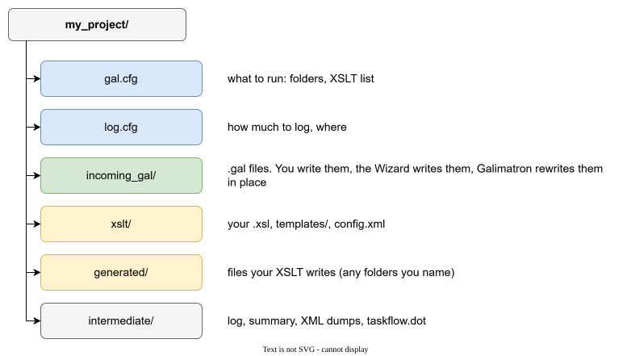

Getting started¶
This page installs Galimatron and runs the smallest useful project. You will see what you write, what Galimatron changes, and what your XSLT produce.
Install¶
Galimatron is one executable (galimatron.exe on Windows, galimatron on Linux) with the SaxonC libraries beside it (Saxon is the XSLT processor that Galimatron uses to run your XSLT). The installer puts these in place, in the install folder (on Windows, C:\Program Files\Galimatron):
| What | Where |
|---|---|
| the executable and the Saxon libraries | bin/ |
gal-functions.xsl: helper functions for your XSLT |
share/galimatron/xslt/ |
catalog.xml: maps the address of gal-functions.xsl to that file |
share/galimatron/ |
The catalog is why your XSLT can write
<xsl:include href="https://github.com/goloveshin/galimatron/xslt/gal-functions.xsl"/>
and still work without a network. Galimatron loads the catalog from the folder beside bin/.
Note
A build that is not installed has no catalog. Include gal-functions.xsl by a path in that case.
If you use Visual Studio Code, also install the GaL extension. It colors .gal files and runs Galimatron on an open gal.cfg.
A project is a folder¶
Galimatron has no project file in a hidden place. A project is a folder with two configuration files, your .gal files and your XSLT.

| Item | Who writes it | What it holds |
|---|---|---|
gal.cfg |
you, by hand | which folders to use and which XSLT to run |
log.cfg |
you, by hand | how much the log says, and where it goes |
incoming_gal/ |
you, by hand (Galimatron rewrites the files in place) | your .gal files |
xslt/ |
you, by hand | your XSLT programs |
generated/ |
your XSLT, during a run | the files you generate: source code, SQL, pages |
intermediate/ |
Galimatron, during a run | the log, the summary, the XML dumps |
The names of the folders are yours. gal.cfg says which is which. See Configuration.
The smallest project¶
The project galimatron_hello has one .gal file, one language XSLT, one post XSLT and one template.
incoming_gal/hello.gal:
root aggregate hello
{
versions
{
0;
}
}
version 0
{
counter = { "0" };
greetings = { };
}
The file says: there is a root aggregate hello. It has one version, 0. In that version are two tags: counter with the value "0" and greetings with no value.
xslt/language.xsl changes the data. It adds one to the counter and writes a greeting:
<xsl:mode on-no-match="shallow-copy"/>
<xsl:template match="tag[@name='counter']/values/value/string/text()">
<xsl:value-of select="xs:integer(.) + 1"/>
</xsl:template>
xslt/page.xsl reads the compiled data and writes page/hello.html from the template templates/page.xml. See Generating text.
gal.cfg lists both XSLT. The first is a language transform, the second a post-language transform. The difference is explained in How a run works.
Run it¶
Open a terminal in the project folder and run
galimatron --gal-config-file gal.cfg --log-config-file log.cfg
(or run Galimatron: execute in Visual Studio Code with gal.cfg open).
After the first run incoming_gal/hello.gal holds
version 0
{
counter = { "1" };
greetings = { "Hello world from Galimatron!" };
}
and page/hello.html exists. Run again: the counter is 2. The .gal file is the memory of the project, and Galimatron rewrites it in place. The console shows each step of the run and its time.
Look at what happened¶
The folder intermediate/ explains the run:
| File | It says |
|---|---|
galimatron.log |
every step, its time, the memory used |
galimatron_summary.xml |
the result of every step and every file that was written |
lang-parsed.xml |
the language as Galimatron read it, before your XSLT |
lang-final.xml |
the language after your XSLT, as it is written back |
post-compiled.xml |
the compiled view that your post XSLT read |
Open lang-parsed.xml and lang-final.xml of the second run side by side. The counter is 1 in the first and 2 in the second. That is the difference your XSLT made. See Logs and diagnostics.
What next¶
- The model you will write in: Entities.
- A project that grows, step by step: Example: messages that grow.
- Commands that edit the
.galfiles for you: The Wizard.